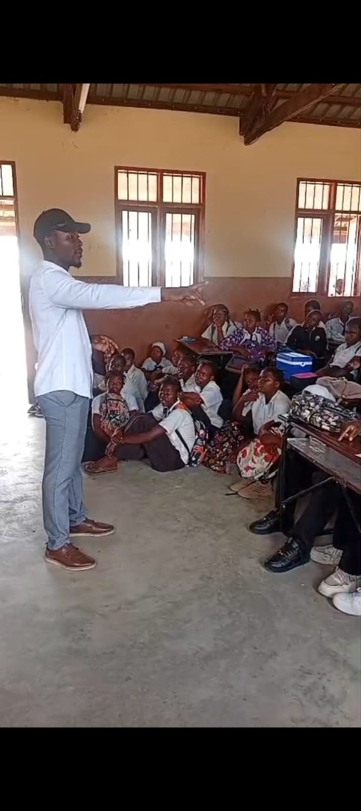

Acredita em Ti
Inspiração, orientação e mentoria para adolescentes e jovens de Cabo Delgado, com cinco pilares: inspiração, orientação, competências, mentoria e acompanhamento. A fase-piloto decorre em Mieze, Metuge, com expansão prevista para Chiúre e Ancuabe.
Inclui os módulos Engenharia de Carreira (CV, cartas e sistemas ATS), Posicionamento Profissional e Marca Pessoal e um curso executivo avançado (comunicação, entrevistas, imagem profissional e networking).
Os participantes podem candidatar-se a voluntários da YHPN e, futuramente, a funções em projetos comunitários.